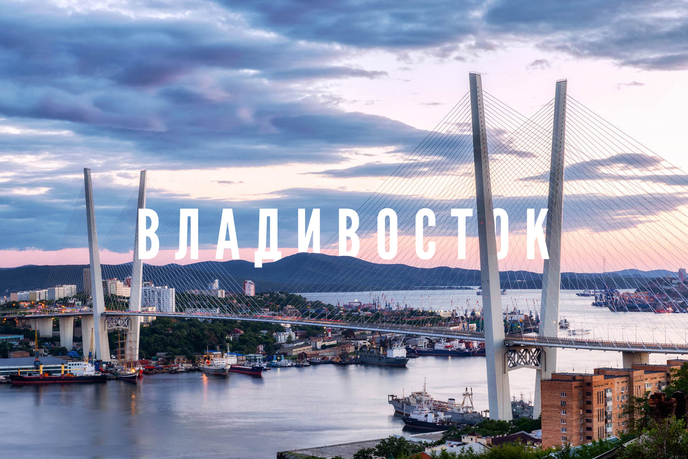

Владивосток — город на Дальнем Востоке России, административный центр Приморского края и один из крупнейших портов страны. Владивосток расположен на берегу Японского моря и окружён живописными холмами, что делает его популярным туристическим направлением. Город знаменит своими мостами, в том числе Золотым и Русским мостами, которые являются одними из символов Владивостока.
Владивосток был основан в 1860 году как военный пост Российской Империи для защиты восточных рубежей. Вскоре город начал развиваться как важный торговый и военно-морской порт. В XX веке Владивосток превратился в ключевой транспортный узел на Дальнем Востоке и конечный пункт Транссибирской магистрали.
Владивосток расположен на полуострове Муравьёва-Амурского, на побережье Японского моря. Город окружён множеством бухт и островов, самым крупным из которых является остров Русский. Климат Владивостока муссонный, с холодной зимой и влажным, тёплым летом. Зима здесь более мягкая по сравнению с другими регионами Сибири, но весна приходит поздно из-за морских ветров.
Владивосток привлекает туристов своими историческими и природными достопримечательностями. Среди главных мест, которые стоит посетить:
Владивосток является важным транспортным узлом на Дальнем Востоке. Здесь находится международный порт, который обслуживает грузоперевозки между Россией и странами Азии. Город также является конечной точкой Транссибирской железной дороги, соединяющей Москву с Дальним Востоком. В последние годы Владивосток становится также центром туризма и торговли благодаря свободному порту и развитой инфраструктуре.
Владивосток — культурный центр Дальнего Востока, где расположены университеты, театры, музеи и концертные залы. Здесь проходят международные фестивали, такие как кинофестиваль "Меридианы Тихого" и различные культурные мероприятия. Одним из крупнейших вузов города является Дальневосточный федеральный университет (ДВФУ), который находится на острове Русский.
Город и его окрестности привлекают любителей активного отдыха. В окрестностях Владивостока можно найти живописные пляжи, горные тропы и национальные парки. Остров Русский, с его уникальной природой и панорамными видами, является популярным местом для экотуризма и кемпинга.